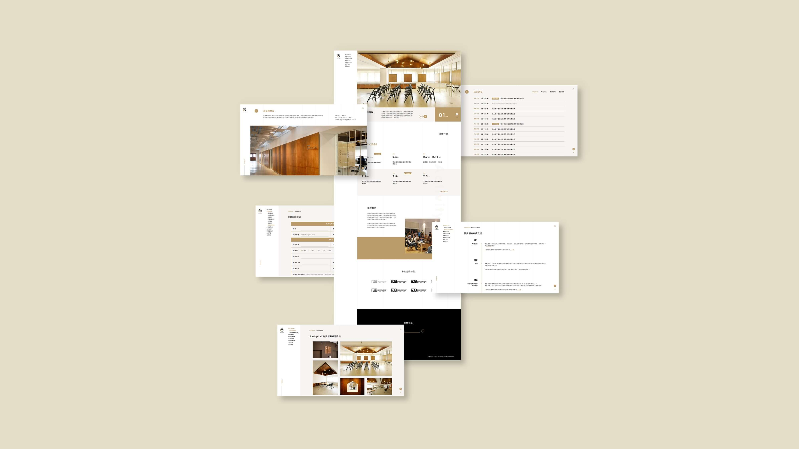
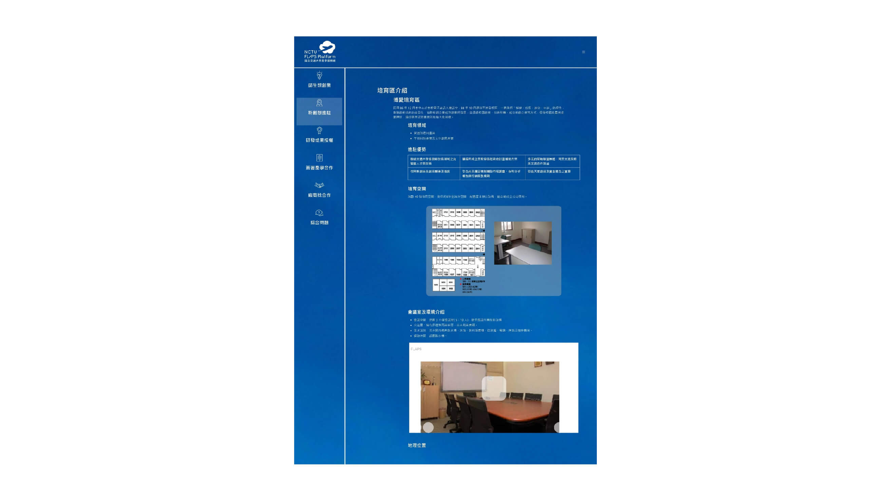
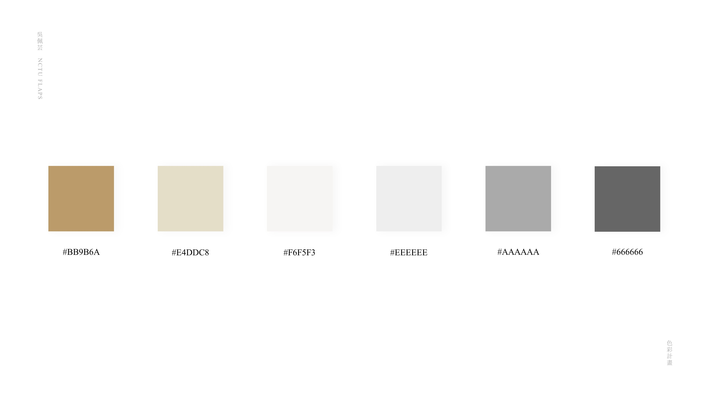
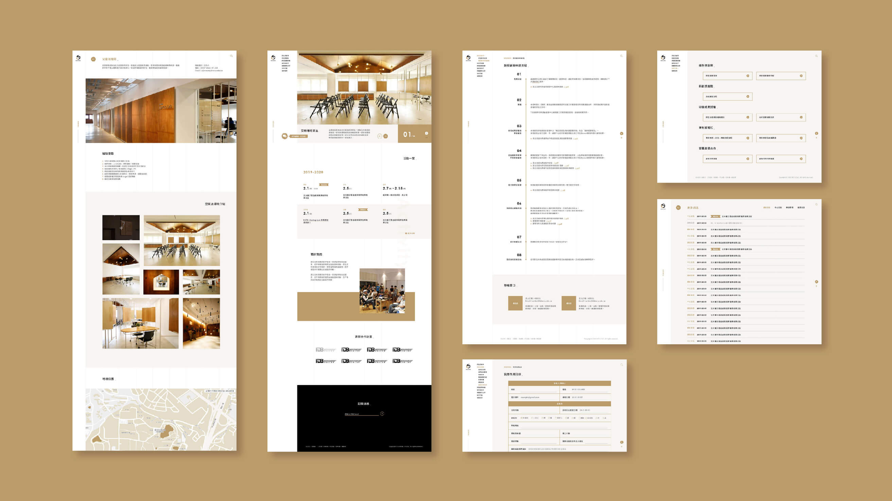

國立交通大學產學服務網
UI / UX Design｜Oct 2018 - Current
交大產學服務網（From Labs Advance Potential Success，簡稱FLAPS）是一個專為使用者需求而設計的產學服務平台。致力於協助解決技術、資金或市場等問題以及媒合相關資源，以期扮演產業合作或新創創業成功的關鍵。網站本身提供中、英文語言選擇，並採用響應式網頁設計，使網站能通用於各式電子裝置。
角色UI / UX 設計師
能力網頁設計、後台編輯介面設計、Logo設計、資訊歸納與整合、Illustrator、Adobe XD

前言
交大產學運籌中心原於2018年將網站外包給廠商製作，然而網站建置完成後卻遭遇問題包含：無法通用於當前的電子裝置、不符合現今的網站瀏覽方式、資訊多而繁雜、色彩單一缺乏吸引力。為改善舊版網站，同時考量時間成本，交大產學運籌中心最終決議捨棄舊有平台，打造一個全新的網站。

舊網站頁面
網站架構
目前設計頁面共計48個（含電腦版與手機版）。提供7項主要功能包含：師生想創業、新創想進駐、研發成果授權、專利幫幫忙、簽署產學合作、文件及法規下載以及我要諮詢。
色彩計畫
採用咖啡色調。透過暖色系的特質，使人產生沉穩、信賴、安定的視覺印象。

介面呈現
網站期望提供使用者充足資訊，因此頁面的功能如「流程說明」、「申請辦法」、「表單填寫」等皆含大量文字。故設計上除了考量美觀外，同時也需兼顧瀏覽時的流暢性。

實際頁面展示
Logo設計
將交大產學服務網的英文名稱「From Labs Advance Potential Success」進行字體延伸設計。
相關連結
>> 交大產學服務網